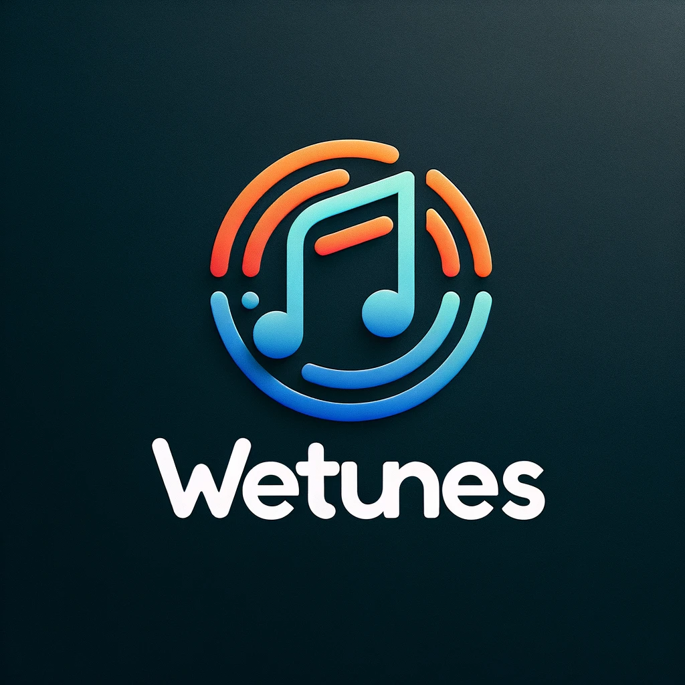

<ion-app>
  <ion-menu side= "start" menuId= "m1" contentId="main-content" id="main">
    <ion-header>
      <ion-toolbar>
        <!-- <ion-title>
          
        </ion-title> -->
        
      </ion-toolbar>
    </ion-header>
    <ion-content class="ion-padding">
      <ion-list>
      <ion-menu-toggle> <!--Para que se esconda una vez pulsado-->
        <ion-item button [routerLink]="['/test-page']">
          <span class="material-symbols-outlined" slot="start">person</span>
          <ion-label >Nombre usuario</ion-label>
        </ion-item>
        <ion-item button [routerLink]="['/test-page']">
          <span class="material-symbols-outlined" slot="start">settings</span>
          <ion-label>Ajustes</ion-label>
        </ion-item>
        <ion-item button [routerLink]="['/session']">
          <span class="material-symbols-outlined" slot="start">share</span>
          <ion-label>Sesión</ion-label>
        </ion-item>
        <ion-item button [routerLink]="['/test-page']">
          <span class="material-symbols-outlined" slot="start">tv</span>
          <ion-label>Modo TV</ion-label>
        </ion-item>
        <ion-item button [routerLink]="['/login']">
          <span class="material-symbols-outlined" slot="start">logout</span>
          <ion-label>Salir Fiesta</ion-label>
        </ion-item>
      </ion-menu-toggle>
      </ion-list>
    </ion-content>
  </ion-menu>
  <div class="ion-page" id="main-content">
    <ion-header>
      <ion-toolbar>
        <ion-buttons slot="start">
          <ion-menu-button></ion-menu-button>
        </ion-buttons>
        <ion-title></ion-title>
      </ion-toolbar>
    </ion-header>
    <ion-content class="ion-padding"> </ion-content>
  </div>
  <ion-router-outlet id="main"></ion-router-outlet>
</ion-app>
